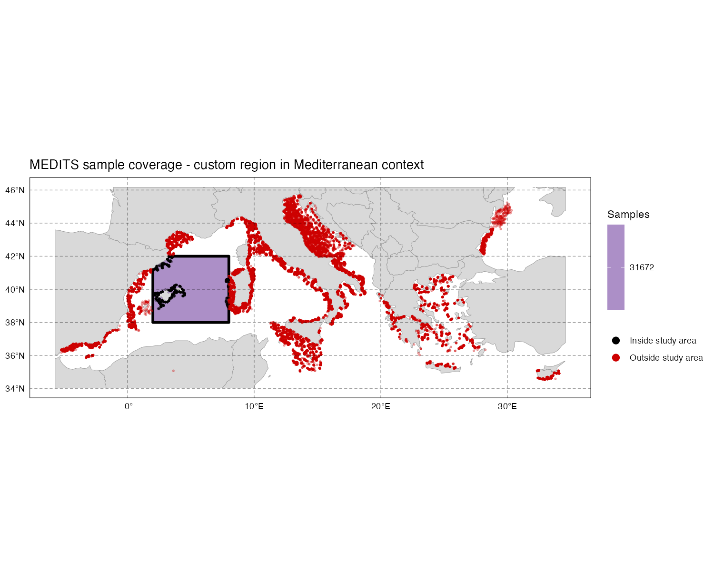
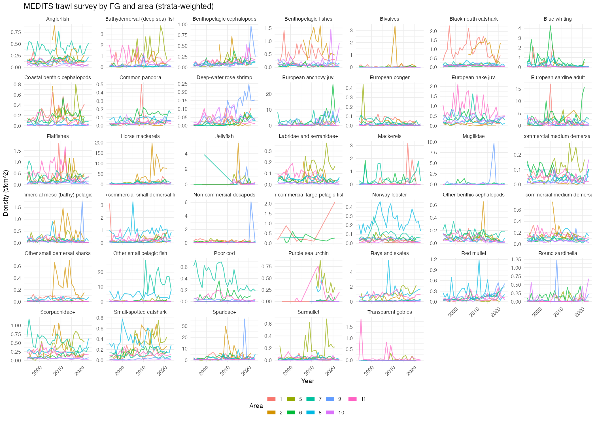
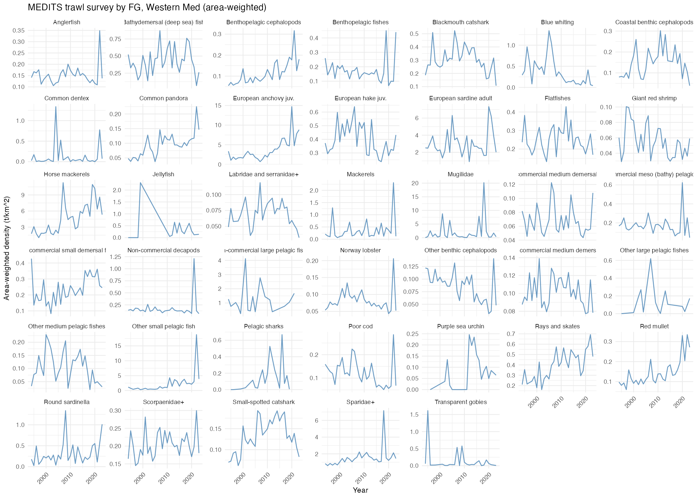
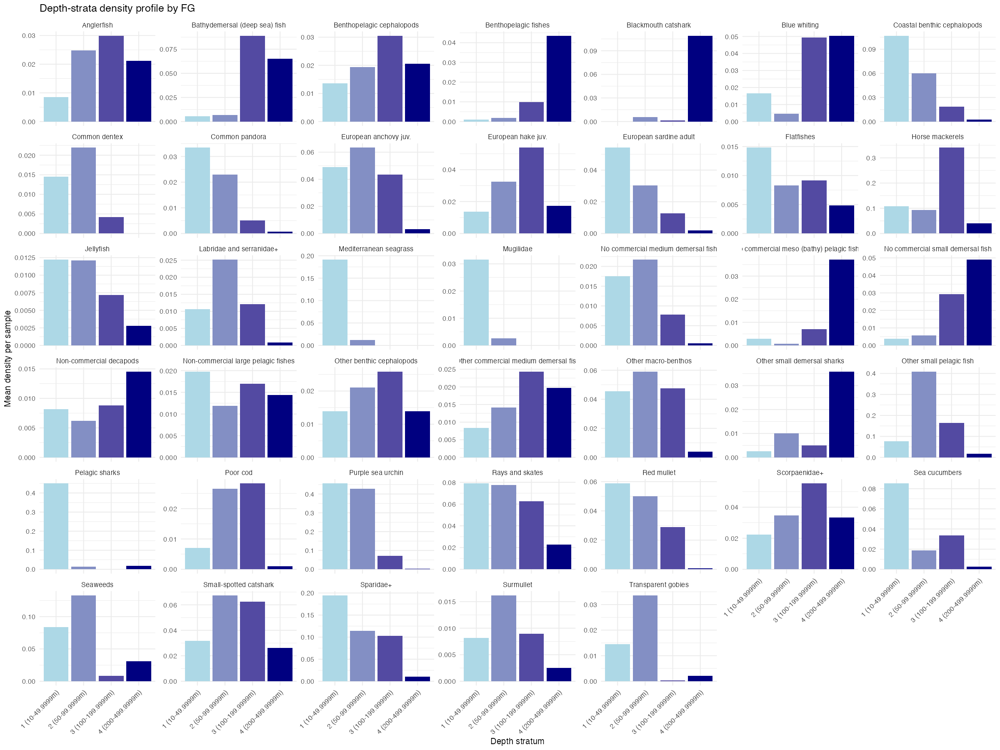
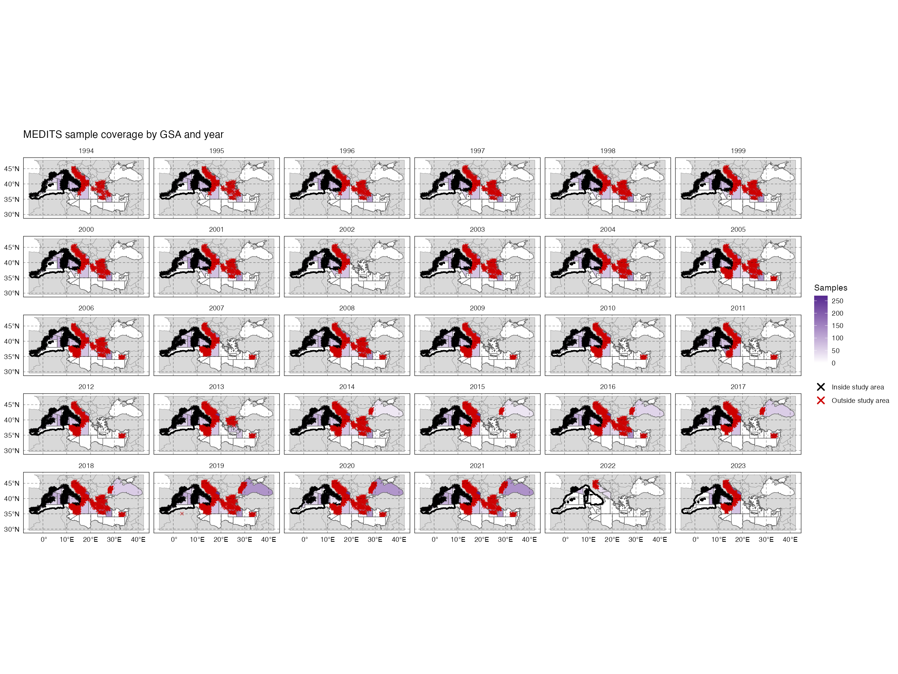

Generalized functions applied to MEDITS (Western Mediterranean), with both GSA-based and custom-region examples
Author
Daniel Vilas
Published
August 11, 2026
1 Overview
This document explains the methodology behind lib_survey_fg_density_functions.R, a generalized function library for converting fishery-independent survey data (biomass/density by species, haul, year, area, stratum) into a Functional Group (FG) density index suitable as Ecopath/Ecosim input.
Unlike the original, MEDITS-specific medbs_full_pipeline_with_fg.R script this document previously covered, the pipeline is now split into two layers:
A shared, survey-agnostic function library (lib_survey_fg_density_functions.R) - the statistical logic (strata weighting, area weighting, outlier detection, catchability correction) that doesn’t depend on which survey or which study area boundary is being used.
Survey-specific example scripts that read a particular survey’s raw files, reshape them into the library’s standardized input format, and call the shared functions. Two examples are covered here:
01_survey_density_westmed.R - MEDITS bottom-trawl data, study area defined by the official GFCM GSA (Geographical Sub-Area) polygons. Also incorporates MEDIAS acoustic survey data (Section 9), combined with MEDITS into a single density index rather than kept separate.
01_survey_density_custom.R - the same MEDITS data, but with the study area defined by a custom boundary (a simple bounding box, or any other shapefile) instead of GSA polygons - useful when the same underlying survey needs to support a different EwE model with its own footprint. MEDITS-only, no MEDIAS component.
Code chunks throughout are not executed when this document renders (eval: false) - they’re shown for reference alongside the explanation, since the pipeline depends on external data files and network access (bathymetry downloads, WoRMS taxonomy lookups) that aren’t available at render time. To reproduce the actual numbers, run the source .R scripts directly. (The exceptions are the figure-copying setup chunk above and the safe_include_graphics() calls below, which only need the plot files to already exist on disk - and degrade to a clear placeholder message, rather than failing the whole render, if a given example script hasn’t been run yet.)
The pipeline covers several conceptually distinct problems in sequence:
Which Functional Group does each species belong to? (Section 4)
What study area am I actually working with? (Section 5)
Given catch and effort, what’s the correctly-standardized density for each haul? (Section 6, including catchability correction and outlier removal)
Given that, what’s the correctly-weighted density estimate for each FG? (Section 7, Section 8)
For the westmed script specifically: how does a second, structurally different survey (acoustic, not trawl) get folded into the same index? (Section 9)
1.1 Pipeline flow
Code
%%{init: {'flowchart': {'padding': 20, 'nodeSpacing': 60, 'rankSpacing': 90}, 'themeVariables': {'fontSize': '20px'}}}%%flowchart LR A["Input data (dataframe1 + FG ref)"] --> B["FG matching (see detail below)"] B --> C["Density and weighting (see detail below)"] C --> D["Outputs (Excel, plots, CSV)"] classDef gray fill:#F1EFE8,stroke:#5F5E5A,color:#2C2C2A classDef purple fill:#EEEDFE,stroke:#534AB7,color:#26215C classDef teal fill:#E1F5EE,stroke:#0F6E56,color:#04342C classDef coral fill:#FAECE7,stroke:#993C1D,color:#4A1B0C class A gray class B purple class C teal class D coral
%%{init: {'flowchart': {'padding': 20, 'nodeSpacing': 60, 'rankSpacing': 90}, 'themeVariables': {'fontSize': '20px'}}}%%
flowchart LR
A["Input data (dataframe1 + FG ref)"] --> B["FG matching (see detail below)"]
B --> C["Density and weighting (see detail below)"]
C --> D["Outputs (Excel, plots, CSV)"]
classDef gray fill:#F1EFE8,stroke:#5F5E5A,color:#2C2C2A
classDef purple fill:#EEEDFE,stroke:#534AB7,color:#26215C
classDef teal fill:#E1F5EE,stroke:#0F6E56,color:#04342C
classDef coral fill:#FAECE7,stroke:#993C1D,color:#4A1B0C
class A gray
class B purple
class C teal
class D coral
Figure 1: Pipeline overview - FG matching and density/weighting each expand into their own sub-flow below.
Code
%%{init: {'flowchart': {'padding': 20, 'nodeSpacing': 60, 'rankSpacing': 90}, 'themeVariables': {'fontSize': '20px'}}}%%flowchart LR A1["Direct match (ScientificName lookup)"] --> A2["Nominate subspp. (repeated-word names)"] A2 --> A3["Taxonomy fallback (genus to phylum)"] A3 --> A4["Seed rules (rank to FG, no data)"] A4 --> A5["Manual review"] classDef purple fill:#EEEDFE,stroke:#534AB7,color:#26215C classDef gray fill:#F1EFE8,stroke:#5F5E5A,color:#2C2C2A class A1,A2,A3,A4 purple class A5 gray
%%{init: {'flowchart': {'padding': 20, 'nodeSpacing': 60, 'rankSpacing': 90}, 'themeVariables': {'fontSize': '20px'}}}%%
flowchart LR
A1["Direct match (ScientificName lookup)"] --> A2["Nominate subspp. (repeated-word names)"]
A2 --> A3["Taxonomy fallback (genus to phylum)"]
A3 --> A4["Seed rules (rank to FG, no data)"]
A4 --> A5["Manual review"]
classDef purple fill:#EEEDFE,stroke:#534AB7,color:#26215C
classDef gray fill:#F1EFE8,stroke:#5F5E5A,color:#2C2C2A
class A1,A2,A3,A4 purple
class A5 gray
Figure 2: FG matching detail (Section 4) - each stage only attempts species the previous one left unmatched; species still unmatched after seed rules go to manual review.
Code
%%{init: {'flowchart': {'padding': 20, 'nodeSpacing': 60, 'rankSpacing': 90}, 'themeVariables': {'fontSize': '20px'}}}%%flowchart LR B1["Sample density (biomass / effort)"] --> B2(["Catchability (if q table given)"]) B2 --> B3["Outlier removal (per species, per area)"] B3 --> B4(["Strata weighting (if strata = true)"]) B4 --> B5(["Area weighting (if more than one area)"]) classDef teal fill:#E1F5EE,stroke:#0F6E56,color:#04342C class B1,B3 teal class B2,B4,B5 teal
%%{init: {'flowchart': {'padding': 20, 'nodeSpacing': 60, 'rankSpacing': 90}, 'themeVariables': {'fontSize': '20px'}}}%%
flowchart LR
B1["Sample density (biomass / effort)"] --> B2(["Catchability (if q table given)"])
B2 --> B3["Outlier removal (per species, per area)"]
B3 --> B4(["Strata weighting (if strata = true)"])
B4 --> B5(["Area weighting (if more than one area)"])
classDef teal fill:#E1F5EE,stroke:#0F6E56,color:#04342C
class B1,B3 teal
class B2,B4,B5 teal
Figure 3: Density and weighting detail (Section 6, Section 7, Section 8) - dashed boxes are conditional steps, skipped if their condition isn’t met.
Dashed/rounded boxes above are conditional: catchability correction only runs if a catchability table is provided, strata weighting only if strata = TRUE (otherwise a simple mean density is used instead), and area weighting is only meaningful with more than one area in scope (with a single custom region, it still runs but is mathematically a formality - see Section 8).
Problems 3 and 4 are the most statistically subtle - a naive average across hauls, or treating every survey estimate as if the gear caught 100% of what was present, can be quietly wrong in ways that matter for the final model.
2 Input files
Every file the pipeline actually reads, traced directly from 01_survey_density_westmed.R/01_survey_density_custom.R’s own variable assignments - not a general description, the literal paths and variable names used in the code.
File
Variable
Used for
Required?
FG_WMed.xlsx
fg_file
Species→FG reference master (dataframe2, Section 4) + its own traits_ewe sheet (Section 3)
All the pCloud-hosted files above share one root, pcloud_dir (Section 3 resolves this the same portable way it resolves git_dir - hardcoded on your machine, an interactive picker for anyone else) - so moving or renaming the Medits_Medias_JRC2026 folder structure itself would break every path in the table above, not just one.
Two downloads happen automatically - no local file needed
The GSA shapefile and the bathymetry raster aren’t files you provide - both are fetched over the network the first time a script needs them (from GFCM’s own Azure blob storage, and from NOAA respectively) and cached locally afterward (gsa_shp_dir/GFCM_GSA_shp for the shapefile; wherever getNOAA.bathy()’s own cache lands, keyed by the bounding box requested) so re-running the script doesn’t re-download every time. This is also why eval: false on the code chunks throughout this document matters (Section 3) - reproducing this pipeline’s actual output needs live network access at least once, which isn’t guaranteed at render time.
## Real call, from lib_survey_fg_density_functions.R's strata-area## computation (@sec-strata-weighted) - bbox comes from the study## area's own extent (a GSA polygon or the custom region), so this## downloads only the bathymetry actually needed, not the whole## Mediterranean every time.bathy <- marmap::getNOAA.bathy(lon1 = bbox["xmin"], lon2 = bbox["xmax"],lat1 = bbox["ymin"], lat2 = bbox["ymax"],resolution =1, keep =TRUE)bathy_r <- marmap::as.raster(bathy)
3 Interactive configuration
The parameters below (YEAR_ECOPATH, TS_YEARS, FILTER_AREAS/AREA_NAME/CUSTOM_BBOX, DROP_OUTLIERS, NORMALIZE_TS, STRATA) are the ones actually exposed as top-level variables in 01_survey_density_westmed.R’s and 01_survey_density_custom.R’s own ## STEP 1: Configuration blocks. Adjust them here to get a ready-to-paste block for whichever script you’re using - it just mirrors the real variable names back at you, it doesn’t run anything.
This generates a config block, not a live result
This is a plain HTML/JS form, evaluated entirely in your browser when the rendered document is open - there’s no R behind it. It can’t execute the pipeline or show you an actual result; you still run the real .R script yourself, with the block below pasted in at its Configuration step.
Both modes are now accurate, live map previews
The custom-region bounding box updates the map live and exactly - it’s just four numbers drawn as a rectangle.
The GSA boundaries below are the real, official GFCM Geographical Sub-Area polygons - downloaded directly from GFCM’s own data (gfcmsitestorage.blob.core.windows.net/.../GFCM_GSA.zip, the same source 01_survey_density_westmed.R itself uses), simplified for web display (rmapshaper::ms_simplify(), 5% vertex retention) and coordinate precision rounded to ~11m (4 decimal places) - both changes purely to keep the embedded file size reasonable; neither affects what’s visible at this map’s zoom level. Selected GSAs (from the field below) highlight in blue; unselected GSAs shown in grey for context.
The window Ecopath's "base year" biomass snapshot averages over (YEAR_ECOPATH).
to
The full range Ecosim's relative-biomass time series covers (TS_YEARS).
to
Unchecked falls back to a simple mean density instead of the bathymetry-weighted estimator (@sec-strata-weighted).
Unchecked reports flagged observations in survey_outliers_flagged.csv without removing them.
Unchecked keeps Ecosim's series as raw density instead of a relative index.
Comma-separated GFCM GSA numbers (FILTER_AREAS). Default is all 11 Western Med GSAs.
Used in the output folder name and every file this script produces (AREA_NAME).
Longitude/latitude bounds, decimal degrees (WGS84). Default covers most of the Western Mediterranean.
xminxmaxyminymax
// Click "Generate config block" above
Parameter
Script variable
Effect
Ecopath base years
YEAR_ECOPATH
Which years get averaged into the Ecopath/FG_spp_Ecopath base-year snapshot
Ecosim time-series range
TS_YEARS
Which years appear in the Ecosim/FG_spp_Ecosim time series
Strata weighting
STRATA
Bathymetry-weighted density estimator (Section 7) vs. a simple mean
Drop outliers
DROP_OUTLIERS
Whether flagged observations are actually removed, or only reported in survey_outliers_flagged.csv
Normalize Ecosim series
NORMALIZE_TS
Whether Ecosim’s series is a relative index (first value = 1) or raw density
GSA numbers (westmed only)
FILTER_AREAS
Which GFCM GSAs are included in the analysis (Section 5, Approach A)
Area name (custom only)
AREA_NAME
Output subfolder name and file-naming prefix - keeps runs for different custom regions from overwriting each other
Bounding box (custom only)
CUSTOM_BBOX
The study area’s outer boundary, decimal-degree WGS84 (Section 5, Approach B)
4 Functional Group matching
Every species caught in a haul needs to be assigned to one of the model’s Functional Groups before its biomass can contribute to an FG-level index. This happens in stages, each one only attempting species the previous stage couldn’t resolve - and at every stage, an ambiguous match (a species or taxonomic rank that could plausibly belong to more than one FG) is flagged for manual review rather than guessed.
4.1 Stage 1 - Direct species-level match
The MEDITS species code is translated to a scientific name via the MEDITS taxonomic list (TM_list), then matched directly against the FG reference table.
prepare_fg_lookup() also resolves stanza splits here - a species appearing in more than one FG, where every one of those FGs is exclusive to that single species (a life-stage split, e.g. juvenile/adult), is reduced to one FG automatically. This is a structural rule (detected from the FG table’s own shape), not a text-pattern match on words like “juv.” - so it works regardless of the wording convention any given FG scheme happens to use. A species spanning multiple FGs where at least one of those FGs also contains other species is a genuinely different, ambiguous case and is excluded from automatic matching entirely.
4.2 Stage 1b - Nominate subspecies
Some scientific names are trinomials for the nominate subspecies, where the subspecies epithet repeats the species epithet by taxonomic convention (e.g. “Diplodus sargus sargus” is the nominate subspecies of “Diplodus sargus”). These fail a direct match if the FG reference only has the binomial form.
A short table of species codes not present in the MEDITS taxonomic list at all, resolved by hand at whichever taxonomic rank is appropriate (species, genus, family, or class). Merged on species_code, not ScientificName - the latter is exactly the column that’s NA for override-needed rows (that’s why they need an override), so using it as a join key would match every NA row against every other NA row and produce a cartesian-product explosion.
4.4 Stage 3 - Taxonomy fallback (genus through phylum)
For species with a resolved scientific name but no FG match, WoRMS taxonomy is used to check progressively broader ranks - genus, family, order, class, phylum, most specific first.
Safety rule, applied at every rank: a taxonomic value is only used for fallback matching if it maps to exactly one FG among all species already in the reference table.
\[\text{rank value is safe to use} \iff \left| \{\, FG_i : \text{species}_i \text{ shares this rank value} \,\} \right| = 1\]
A genus spanning multiple FGs (e.g. containing both a small pelagic species and a large predatory one) is too ecologically diverse to assign safely, and is excluded rather than assigned to whichever FG happens to come up first. Ranks are tried in order of specificity - a genus-level match always wins over a broader but explicit order-level rule for the same species, since rank specificity takes priority over whether a mapping happened to be data-driven or explicitly stated.
4.5 Stage 4 - Seed rules for catch-all FGs
Some FGs (e.g. “Other macro-benthos”) have zero species pre-listed against them in the FG reference table - they’re buckets meant to catch “anything else” of a general taxonomic type. The data-driven fallback above can’t discover a mapping for these, since it can only learn from species already assigned to an FG. A small, explicit seed table covers this genuine gap:
species_exceptions is applied before the rank-based rules, so a named species is never caught by a broader rule that’s wrong for it specifically - e.g. Squilla mantis is commercially exploited even though the rest of its order (Stomatopoda) isn’t, so the generic “Decapoda-adjacent → non-commercial” rule would misclassify it without this override.
summarize_unresolved_species() reports mean biomass and appearance count alongside taxonomy for whatever remains genuinely unmatched, so manual review can be prioritized - a species appearing in hundreds of samples with real biomass matters more than a one-off trace appearance.
5 Study area definition
Every function downstream of FG matching needs to know which “area” each sample belongs to, and needs a polygon layer to compute stratum areas from bathymetry. The shared library doesn’t assume this has to be a set of official GSA polygons - it just needs some polygon layer with an ID column. Two approaches are covered here.
5.1 Approach A - GFCM GSA polygons
The official GFCM GSA shapefile is downloaded once and cached. MEDITS’ own area field already gives each haul’s GSA directly, so no spatial join is needed.
Figure 4: Sample coverage by GSA. selected_areas highlights the GSAs actually in scope (FILTER_AREAS) with a bold black outline - the outer contour of their union, not the internal lines between them.
5.2 Approach B - a custom boundary (bounding box or arbitrary shapefile)
The same MEDITS raw data can instead be restricted to a custom footprint that doesn’t correspond to any GSA code - a simple bounding box, or a shapefile for a different EwE model’s own boundary.
CUSTOM_BBOX["xmin"] carries the name "xmin" with it (it’s already a named vector element) - c(xmin = CUSTOM_BBOX["xmin"], ...) without unname() concatenates into "xmin.xmin" instead of "xmin", which st_bbox() can’t parse. This is the same bug class that shows up anywhere a named-vector element gets re-wrapped in another named vector - it also affected an earlier version of the land-basemap layer in plot_sample_map(), for the same reason.
filter_samples_by_area(filter_type = "shapefile") works the same way, but takes an sf polygon (or a path to one) instead of a bounding box - for a real, non-rectangular model boundary.
The sample coverage map shows the full survey context, not just the custom box
plot_sample_map() computes its display extent from the union of area_shp‘s own bounding box and the sample points’ own Lat/Lon distribution - not area_shp’s bbox alone. Passing it the full, unfiltered survey data (before filter_samples_by_area() runs) means the map zooms out to show the complete MEDITS distribution across the whole survey region, with the custom area’s contour highlighted within that context via selected_areas - not a tight, context-free zoom into just the small box itself. Points inside vs. outside the selected area are shown in different colors either way.
A plain bounding box, unlike the GFCM GSA polygons, is not coastline-aware - it can genuinely overlap land. land_on_top = TRUE draws the land basemap after the intensity fill rather than before, so any part of the box that’s actually land is visibly masked - only marine area should read as part of the study region, and a rectangle has no way to exclude land on its own.

Figure 5: Sample coverage within a custom bounding-box region, independent of GSA lines entirely.
With only one custom area, AreaID is set to 1 for every retained sample - there’s no sub-division unless the boundary is itself split into multiple named sub-zones. Every function further downstream (strata weighting, area weighting, Excel export) works identically either way; they only ever see whatever AreaID/area_shp combination they’re given, never assuming GSA-specific structure.
6 Per-haul density and corrections
6.1 Swept area
Trawl catch weight on its own isn’t comparable between hauls - a haul that swept more seafloor will naturally catch more, independent of true fish density. Standardizing to a density (weight per unit area swept) is what makes hauls comparable at all.
The unit for wing_opening (decimetres, not metres) isn’t documented directly in the raw data - confirmed by cross-checking against vertical_opening, a constant 20 across hauls using the standard MEDITS GOC73 trawl gear. 20 decimetres = 2.0m matches GOC73’s real vertical opening; 20 metres would be absurd for a bottom trawl.
6.2 Depth-stratum assignment
MEDITS is a stratified-random survey design: the sampling area within each GSA (or custom region) is divided into 5 standard bathymetric strata.
assign_depth_stratum() supports three input shapes: no Stratum column at all (fully derived from depth), a Stratum column already fully populated (used as-is, no derivation attempted), or a partially populated one - existing values are kept, only the missing ones are derived from depth. Hauls with a mean depth outside 10-800m don’t belong to any of the 5 standard strata and are excluded from the strata-weighted index, rather than force-assigned to whichever edge stratum happens to be closest.
6.3 Catchability correction
Trawl surveys don’t catch 100% of what’s actually in the swept area - some individuals escape under, over, or around the net. The raw survey density is a systematic underestimate of true density by an amount that varies by species. Catchability (\(q\), typically \(0 < q \le 1\)) corrects this:
Real catchability tables mix true species binomials with broader taxonomic-group entries (e.g. “Isopoda”, “Hydrozoa” - order/class names) and genus-level “spp” entries (“Cirolana spp”, meaning any species in that genus). apply_catchability_correction() classifies each table entry by its apparent level from its text shape and resolves species against it in order of specificity - genus before order, order before phylum - so a genus-level match always wins over a broader but explicit rule for the same species. For species matching nothing in the table at any level, a taxonomic-proximity fallback looks for other species already in the table sharing genus, then family, then order, and borrows the average of their \(q\) rather than falling straight to a generic default.
exempt_fg_names/exempt_species force \(q=1\) (no correction) regardless of anything else resolved - for groups a bottom trawl isn’t designed to sample representatively at all (pelagic, planktonic, seagrass/algae FGs), where “catchability” as a concept doesn’t apply the same way.
6.4 Sample-level outlier detection
A single anomalous haul (a genuine data error, misidentification, or unit mismatch) can distort an entire year’s FG-level density if left uncorrected. remove_sample_outliers() runs before any aggregation, so only that one species’ one observation is affected - not the whole FG or the whole year for other species sharing it.
Detection compares each observation only against that same species’ own history within the same area - a robust (median/MAD-based) z-score, computed on log1p(Density) rather than the raw scale. This matters for schooling/aggregating species (anchovy, horse mackerel, boarfish): their catch data is naturally, heavily right-skewed - most hauls catch little to nothing, occasionally a haul hits a school and catches a lot, which is genuine ecology, not an error. On the raw scale this makes the reference statistics tiny, so even a real high catch produces a huge z-score; threshold=70 on the log scale was calibrated against a synthetic test distribution to separate genuine school events from a clear data error, and is a starting point to tune against your own data’s actual flagged/not-flagged split, not a universal constant.
drop_outliers=FALSE reports flagged observations without changing the data - useful for reviewing what would be removed before committing to it. Flagged observations (species, area, year, sample, flagged value, typical value, z-score, and whether each was actually dropped) are saved to survey_outliers_flagged.csv.
7 Strata-weighted density (within an area)
This is the central statistical correction in the pipeline. A simple mean density across all hauls in an area implicitly assumes every haul represents an equal share of that area’s seafloor - but different strata are sampled with different numbers of hauls and cover different fractions of the total area, so an unweighted mean would be biased toward whichever stratum happened to get more hauls that year, independent of how much of the area it actually represents.
The standard stratified-survey estimator instead computes a per-stratum mean, then weights each stratum’s contribution by its true share of the area’s total surveyable area (not its share of hauls):
The stratum area shares are computed from bathymetry, not from sample counts - a NOAA bathymetry raster is downloaded, clipped to the area’s own polygon (a GSA boundary, or the custom region from Section 5 - compute_strata_area_by_area() doesn’t need to know which), and each cell’s real area (latitude-corrected, since grid cells shrink toward the poles) is summed within each depth stratum.
n_samples must come from the full dataset, never a species/FG-filtered subset
per_group_fg deliberately does not compute its own sample count - a species/FG-specific count would only include samples where that group had non-zero catch, understating true sampling effort (a sample where a species was genuinely absent still counts toward the denominator in a proper mean-density estimator, contributing a true zero). The one correct source of n_samples is n_samples_by_stratum, computed from the fulldt (every species/FG together). Using the wrong source here was confirmed, via a hand-calculated test, to produce up to a 4x overestimate for a species caught in only 1 of 4 hauls at a stratum.

Figure 6: Density index by Functional Group and area, strata-weighted (per-area version - see Section 8 for the region-wide aggregate used in Ecopath/Ecosim inputs).
8 Region-wide aggregation (across areas)
Section 7 gives a correctly-weighted density per area. Combining multiple areas into a single region-wide estimate has exactly the same weighting problem one level up: areas differ substantially in total surveyable area, so a simple mean of per-area densities would implicitly treat a small area as equally representative of the region as a large one.
A single-stage estimator combining every (area, stratum) cell directly - using each cell’s absolute area, not its proportion within its own area - avoids any double-weighting error from compounding two separate weighting stages:
This is the version used for Ecopath/Ecosim-facing outputs - the per-area index (Section 7) is retained separately for area-level plots and comparisons, where seeing individual areas is the point.

Figure 7: Region-wide, area-weighted density index by Functional Group.
For the custom-region example (Section 5, Approach B), this step is mathematically a formality with only one area in scope - weight_by_area() still runs the same formula, it just sums over one area’s worth of cells, so the result is identical to the per-area index above. It’s kept in the pipeline anyway so both examples produce the same Excel structure - if the custom boundary is later split into its own named sub-zones, this step becomes meaningful again with no other code changing.
9 MEDIAS acoustic survey
Everything from Section 4 through Section 8 describes MEDITS, the demersal trawl survey - but 01_survey_density_westmed.R also incorporates MEDIAS, the acoustic survey, and combines the two into a single density index rather than keeping them as separate Ecopath/Ecosim sheets. MEDIAS is specifically relevant for small pelagics (sardine, anchovy) that a bottom trawl doesn’t sample well but an acoustic survey does.
MEDIAS is not part of the sample coverage map (Section 5)
MEDITS data arrives per-haul, with a real lat/lon for every sample - that’s what Section 5’s sample coverage map plots. MEDIAS data arrives already aggregated by country/GSA/year/species (no individual acoustic transect coordinates in the files this pipeline reads) - there’s no per-point geometry to plot for it, so the coverage map only ever shows MEDITS. This isn’t a bug or an oversight to fix; it’s a structural difference in what the two source files actually contain.
MEDIAS differs from MEDITS in several ways that matter for interpreting the combined result, not just in data source:
No strata weighting, no catchability correction.Section 7 and the catchability step in Section 6 don’t apply here - there’s no per-haul depth to stratify by, and MEDIAS’ own acoustic backscatter-to-biomass conversion already accounts for detectability in a way a MEDITS-style catchability table doesn’t map onto.
A fixed 10-200m depth band, per the MEDIAS Handbook (April 2025) - the acoustic sampling design’s own minimum (10m isobath) and maximum (200m echo-sounding limit), not a modeling choice made in this pipeline.
Official reporting convention is t/nm² (tons per square nautical mile), not the kg/km² MEDITS density work uses elsewhere in this pipeline - converted to t/km² before combining with MEDITS (KM2_PER_NM2 conversion constant), so the two indices are on a comparable footing before averaging.
9.1 Loading and FG matching
Raw abundance/biomass CSVs are collapsed to country/GSA/year/species (summing across length classes, replicate-checked to decide sum() vs mean() for collapsing raw records), then species codes are resolved to scientific names via the ASFIS species list (FAO’s own code table) rather than MEDITS’ own species-code system:
Code
acoustic <-merge(acoustic_biom, acoustic_abund, by =c("country", "gsa", "year", "species"), all =TRUE)acoustic <-merge(acoustic, fao_code_lookup, by ="species", all.x =TRUE) # ASFIS Alpha3_Code -> ScientificNameacoustic_matched <-match_species_to_fg(acoustic[!is.na(ScientificName)], fg_lookup_safe)acoustic_matched <-match_nominate_subspecies_fg(acoustic_matched, fg_lookup_safe)acoustic_matched <-fallback_match_fg_by_taxonomy(acoustic_matched, fg_lookup_safe, taxonomy_source ="worms")
Once resolved to ScientificName, matching reuses the exact same fg_lookup_safe and the exact same Stage 1/1b/3 functions from Section 4 - a species matched here and a species matched in MEDITS go through identical logic, they just start from a different species-code system (ASFIS vs. MEDITS’ own).
9.2 Area denominator
MEDIAS density needs a country/GSA-level survey area (NM²), which - unlike MEDITS’ bathymetry-derived stratum areas (Section 7) - primarily comes from each reporting institute’s own published figure, the MEDIAS Handbook’s Table 1:
Handbook areas are hand-transcribed - verify against your own institute’s reports
These six rows were transcribed from the MEDIAS Handbook (April 2025) and restricted to entries plausibly overlapping the Western Med (FILTER_AREAS, GSA 1-11) - Adriatic/Black Sea entries were left out as out of scope, not because they don’t exist. Verify against your own institute’s current MEDIAS survey reports before trusting these for anything beyond this pipeline’s own internal density calculation - handbook figures can be revised between editions.
For any country/GSA combination not covered by Table 1, the pipeline falls back to a bathymetry-derived 10-200m area estimate - reusing compute_strata_area_by_area() from Section 7 with a single depth stratum spanning MEDIAS’ own sampling range, rather than duplicating that bathymetry logic:
Rather than write separate MEDIAS sheets, both surveys’ FG-level and species-level density indices are stacked and averaged wherever they overlap on the same Year/FG (or Year/species) - this is the species_density_regional_combined object that everything from Section 3 onward (FG_spp_Ecopath, traits_ewe, etc.) actually reads from, not MEDITS alone:
Code
fg_index_combined_raw <-rbindlist(list( fg_index_regional[, .(Year, FG_num, FG_name, mean_density, Survey ="MEDITS")], medias_fg_index_regional[, .(Year, FG_num, FG_name, mean_density = mean_density_biomass_t_km2, Survey ="MEDIAS")]), fill =TRUE)## FG/Year combinations present in BOTH surveys are flagged and printed,## not silently averaged without comment - blending a demersal-trawl## density with an acoustic density is a real methodological choice,## worth a second look for the specific FGs/years it actually happens tofg_overlap <- fg_index_combined_raw[, .N, by = .(Year, FG_num, FG_name)][N >1]fg_index_regional_combined <- fg_index_combined_raw[ , .(mean_density =mean(mean_density, na.rm =TRUE)), by = .(Year, FG_num, FG_name)]
The species-level combination (species_density_regional_combined) follows the identical pattern - stack, flag genuine species/Year overlaps (typically a small pelagic taken in both an acoustic survey and incidentally in demersal trawl catches), then average.
Averaging on overlap is a modeling choice, not a statistical inevitability
When both surveys report a density for the same FG (or species) and year, this pipeline takes a simple, unweighted mean of the two. An alternative - weighting by each survey’s own sampling effort or estimated precision, rather than treating both estimates as equally trustworthy - would be a defensible different choice. The overlap is flagged and printed specifically so this default doesn’t apply invisibly to combinations where the two surveys substantially disagree.
10 Validation: depth-strata density profile
A direct ecological sanity check on the strata-weighting logic itself: for each FG, plot its raw per-sample density (deliberately before area-weighting, since area-weighting is about scaling to a population estimate, not about revealing where a species actually lives) across the 5 depth strata.
If the pipeline is working correctly, FGs known to live in deep water should show density concentrated toward the deeper strata, and coastal/shallow FGs should concentrate toward the shallow ones. A flat profile, or an unexpected peak for a well-documented species, is worth investigating directly - it could point at a stratum-coding issue, a swept-area problem, or a species-matching error further upstream, rather than being dismissed as noise.

Figure 8: Depth-strata density profile by Functional Group.
11 Sample coverage map
Before (or alongside) the density calculations, plot_sample_map() gives a direct visual and geometric check on the input data itself - independent of anything FG- or density-related.
This does more than plot points - it performs concrete geometric checks and reports them directly:
CRS is validated explicitly, not assumed: area_shp and the sample points are both transformed to a common, known CRS before plotting rather than relying on automatic layer alignment, and the function errors clearly if area_shp has no CRS defined at all (rather than silently producing a badly misplaced polygon layer).
Points genuinely outside every polygon (even after correct CRS alignment) are counted and listed - this distinguishes a real projection problem (should resolve to ~0 once fixed) from genuine bad coordinate data (stays nonzero regardless).
Points inside vs. outside the selected study area specifically are shown in different colors - a point can be a perfectly valid coordinate in a real, neighboring GSA and still be outside this particular analysis’s scope, which is a different question from “is this a valid coordinate at all”.
The selected study area’s outer contour is drawn in bold, using a rasterize-then-repolygonize technique rather than a plain st_union() - real shapefiles are rarely perfectly topologically snapped at shared boundaries, and a plain union can leave a visible seam artifact at the join between adjacent polygons that a coarser raster grid smooths over.
Figure 9: Sample coverage map: land basemap, GSA polygons shaded by sampling intensity, selected-area contour in bold black, sample points colored by whether they fall inside or outside the selected study area.
by_year = TRUE produces the same map faceted by year - useful for spotting a coverage gap in one specific year that the all-years-combined map would mask, since every other year’s samples overlaid on top of it can make a real gap look fine.

Figure 10: Sample coverage faceted by year.
12 Outputs
File
Content
survey_fg_annual_index.csv
Per-area, strata-weighted density by year and FG
survey_fg_annual_index_regional.csv
All areas combined, area-weighted - the Ecopath/Ecosim-facing version
survey_unmatched_for_manual_review.csv
Species still unmatched after every FG-matching stage, with mean biomass, appearance count, and taxonomy
survey_outliers_flagged.csv
Sample-level observations flagged as statistical outliers, with a was_dropped column
strata_area_by_area.csv
Cached bathymetry-derived stratum area proportions per area
These are real files, copied from each script’s own out_dir at render time (never a placeholder or a stale leftover - the copy step above always overwrites) - if a given example script hasn’t been run yet, its links below say so plainly instead of silently pointing at nothing.
Not yet available - downloads/custom_ecopath_ecosim_inputs.xlsx doesn’t exist yet. Run 01_survey_density_custom.R first, then re-render this document.
Not yet available - downloads/custom_survey_fg_annual_index.csv doesn’t exist yet. Run 01_survey_density_custom.R first, then re-render this document.
Not yet available - downloads/custom_survey_fg_annual_index_regional.csv doesn’t exist yet. Run 01_survey_density_custom.R first, then re-render this document.
Not yet available - downloads/custom_survey_unmatched_for_manual_review.csv doesn’t exist yet. Run 01_survey_density_custom.R first, then re-render this document.
Not yet available - downloads/custom_survey_outliers_flagged.csv doesn’t exist yet. Run 01_survey_density_custom.R first, then re-render this document.
Not yet available - downloads/custom_strata_area_by_area.csv doesn’t exist yet. Run 01_survey_density_custom.R first, then re-render this document.
ecopath_ecosim_inputs.xlsx is SHARED across scripts - this download is a snapshot
Since 02_fao_catches.R, 04_pbqb_calc.R, and 03_ecobase_query.R all write into the same workbook (Section 3 and the callout below), the copy linked above only reflects whichever sheets existed in the file at the moment this document was last rendered - if you’ve run other scripts since, re-run the R script and re-render this page to get a current snapshot.
12.2ecopath_ecosim_inputs.xlsx
This workbook is built up across four different scripts, not just this one - 01_survey_density_westmed.R/01_survey_density_custom.R (biomass/density sheets, this document), 02_fao_catches.R (catch sheets), 04_pbqb_calc.R (PB/QB), and 03_ecobase_query.R (Ecobase/reference sheets). Each script’s upsert_workbook_sheets() call only ever adds or replaces its own named sheets - it never touches or reorders anyone else’s, so the scripts can be run in any order, repeatedly, without one clobbering another’s work.
Because of that, final sheet order isn’t something any single script controls - it’s fixed up in one last step, finalize_workbook_sheet_order(), called at the end of both 01_survey_density_westmed.R and 01_survey_density_custom.R (and, once written, the equivalent point in 02_fao_catches.R/04_pbqb_calc.R too). It renames a couple of sheets and reorders the whole workbook to a fixed target layout, skipping any target sheet that hasn’t been created yet and keeping - never dropping - anything unexpected it finds. Whichever of the four scripts happens to run last leaves the workbook in the correct final state.
Final sheet order:
#
Sheet
Written by
Content
1
FG(renamed from FG_lookup)
01_survey_density_*.R
Every unique FG_num/FG_name pair from the FG reference table
2
Ecopath
01_survey_density_*.R
FG-level biomass for the base year and the year_ecopath average
Species-level density, prop_sp_fg, and taxonomy for the base-year window (see below)
5
PB_QB
04_pbqb_calc.R
Production/biomass and consumption/biomass by FG
6
Ecobase
(external source)
EcoBase-derived reference values
7
PB_QB_References_(renamed from References)
04_pbqb_calc.R
FishBase/SeaLifeBase reference citations backing the PB/QB estimates
8
traits_ewe
01_survey_density_*.R
Species-level life-history/ecology traits, reconciled against the FG reference table (see below)
9
Ecosim
01_survey_density_*.R
FG-level relative biomass time series across the full ts_years range
10
FG_spp_Ecosim
01_survey_density_*.R
Species-level density, averaged across the fullts_years range
11
Catches_Ecosim
02_fao_catches.R
FG-level catch time series, mirroring Ecosim’s shape
FG_spp_Ecopath: every species, zero-filled rather than blank or absent
FG_spp_Ecopath’s species list is the union of the FG reference table (dataframe2) and every species actually observed and FG-matched this run (species_density_regional[_combined]) - taking the union, not the reference table alone, matters because taxonomy-fallback/seed-rule matches (Section 4, Stages 3-4) can resolve a species to an FG without that species ever having been individually listed in the reference table by name. Using the reference table alone would silently drop those.
A species with no observed density in the year_ecopath base years - whether never observed at all, or only observed in other years - gets Density = 0 and prop_sp_fg = 0, not NA and not a missing row. Taxonomy columns (Genus/Family/Order/Class/Phylum) are merged in from species_taxonomy for every species, observed or not. FG_num, FG_name, Species are always the first three columns.
Code
## Union of the reference catalog and everything actually observed/matched -## NOT the reference catalog alone (see callout above for why that matters)all_species_fg <-unique(species_density_regional_combined[, .(FG_num, FG_name, Species = ScientificName)])fg_master_species <-unique(dataframe2[, .(FG_num, FG_name, Species = ScientificName)])full_species_fg <-unique(rbindlist(list(all_species_fg, fg_master_species)), by ="Species")## base-year Density + within-FG proportion, zero-filled rather than NAdensity_in_base_years <- species_density_regional_combined[ Year %in% YEAR_ECOPATH, .(Density =mean(mean_density, na.rm =TRUE)), by = .(FG_num, FG_name, Species = ScientificName)]FG_spp_Ecopath <-merge(full_species_fg, density_in_base_years,by =c("FG_num", "FG_name", "Species"), all.x =TRUE)FG_spp_Ecopath[is.na(Density), Density :=0]FG_spp_Ecopath[, fg_total_density :=sum(Density, na.rm =TRUE), by = FG_num]FG_spp_Ecopath[, prop_sp_fg :=ifelse(fg_total_density >0, Density / fg_total_density, 0)]FG_spp_Ecopath[, fg_total_density :=NULL]## taxonomy merged in for every species, observed or notFG_spp_Ecopath <-merge(FG_spp_Ecopath, species_taxonomy, by.x ="Species", by.y ="ScientificName", all.x =TRUE)## defensive check: every dataframe2 FG present, even with zero species/biomassfull_fg_list <-unique(dataframe2[, .(FG_num, FG_name)])fg_missing <- full_fg_list[!FG_num %in%unique(FG_spp_Ecopath$FG_num)]if (nrow(fg_missing) >0) { FG_spp_Ecopath <-rbindlist(list(FG_spp_Ecopath, fg_missing), fill =TRUE) FG_spp_Ecopath[is.na(Density), Density :=0] FG_spp_Ecopath[is.na(prop_sp_fg), prop_sp_fg :=0]}## FG_num, FG_name, Species always first - merge()'s own column-order## side effect isn't relied onsetcolorder(FG_spp_Ecopath, c("FG_num", "FG_name", "Species",setdiff(names(FG_spp_Ecopath), c("FG_num", "FG_name", "Species"))))setorder(FG_spp_Ecopath, FG_num, -prop_sp_fg)
traits_ewe: read from the FG reference workbook, not built from scratch
The FG reference file (FG_WMed.xlsx) already has its own traits_ewe sheet - species-level Organism/Ecology/Occurrence/Biomass & Catch contribution/IUCN/Exploitation/Vulnerability/Mean & Max length/Mean weight/Mean life span, laid out as alternating “N: Group Name” header rows followed by one row per species in that FG. This is parsed directly (the FG number/name is filled DOWN from each header row onto the species rows beneath it) and reconciled against dataframe2, the same species/FG master used everywhere else: species with no traits row are flagged (missing_traits = TRUE), species with a traits row not matching any master species by name are kept but flagged (in_fg_master = FALSE, most often a naming variant like “Bivalvia” vs. “Bivalvia sp.” rather than a genuinely new species), and any FG-number disagreement between the two sources is printed rather than silently resolved either way.
Code
## the index column on species rows is a running species ID, NOT the FG## number - the FG number only exists in the "N: Group Name" header## row's text above it, so it's filled DOWN onto the species rows belowfill_down <-function(x) { idx <-which(!is.na(x))if (length(idx) ==0) return(x) rep_idx <-findInterval(seq_along(x), idx) out <- x[idx][pmax(rep_idx, 1)] out[rep_idx ==0] <-NA out}traits_raw <-as.data.table(readxl::read_excel(fg_file, sheet ="traits_ewe", col_names =TRUE))setnames(traits_raw, 1, "row_index")is_header_row <-is.na(traits_raw$row_index) &str_detect(traits_raw$Species, "^\\d+:\\s*")header_num <-rep(NA_real_, nrow(traits_raw))header_num[is_header_row] <-as.numeric(str_match(traits_raw$Species[is_header_row], "^(\\d+):")[, 2])traits_raw[, FG_num_traits_sheet :=fill_down(header_num)]species_traits <- traits_raw[!is.na(row_index)]species_traits[, ScientificName :=trimws(Species)]## reconcile against dataframe2 - flag gaps in either direction rather## than silently guessing at a naming-variant matchtraits_reconciled <-merge(dataframe2, species_traits, by ="ScientificName", all =TRUE)traits_reconciled[, in_fg_master :=!is.na(FG_num)]traits_reconciled[, missing_traits :=is.na(FG_num_traits_sheet)]
Sheet order and renames are fixed up in one final step
upsert_workbook_sheets() (used by every script that writes to this workbook) is deliberately order-independent - it only ever adds/replaces its own named sheets, never reorders the workbook. Final sheet order is instead set explicitly, once, by finalize_workbook_sheet_order(), called at the end of 01_survey_density_westmed.R/01_survey_density_custom.R (and, once added, the equivalent point in 02_fao_catches.R/04_pbqb_calc.R):
Sheets already renamed to their target name are matched as-is; a target sheet that doesn’t exist yet (e.g. PB_QB before 04_pbqb_calc.R has run) is skipped with a message, not an error, and anything in the workbook that isn’t in target_order is kept and appended at the end rather than dropped - so this is safe to call from every script, in any order, and whichever one runs last leaves the workbook correctly ordered.
On the Ecosim time-series format
Unlike the Ecopath sheet format (checked directly against a real exported file from this project at an earlier stage), the Ecosim time-series sheet format is built from Ecosim’s documented structure, not confirmed against a real exported example. If an actual exported file from Ecosim’s own time-series import tool becomes available, this should be checked against it directly.
Catches_Ecopath/Catches_Ecosim: added from 02_fao_catches.R’s own FG-level catch series
Landings/catch data is a separate concern from survey-derived biomass density - this pipeline doesn’t touch catch data at all, 02_fao_catches.R does, producing an FG-level Year x FG_num x FG_name x Catch_t table (raw total tonnes landed across the whole region, not yet a density). That table is added to the shared workbook by add_catches_to_ecopath_workbook(), mirroring Ecopath/Ecosim’s own shape exactly, so Catches and Biomass sit side by side in a directly comparable format.
Unlike I have for 02_fao_catches.R itself (I don’t have that script - only the shared library function it calls), this function’s own code is real and complete, so it’s shown here in full rather than paraphrased:
add_catches_to_ecopath_workbook <-function(fg_catch, fg_lookup, out_path, year_ecopath, area_km2, ts_years =NULL) {if (missing(area_km2) ||is.null(area_km2) ||is.na(area_km2) || area_km2 <=0) {stop("add_catches_to_ecopath_workbook(): area_km2 must be a positive number - fg_catch's"," Catch_t is a RAW TOTAL (tonnes landed across the whole region), not a density,"," and needs to be divided by the study area to match Biomass's t/km^2 units in"," the Ecopath sheet. Pass the same total area used elsewhere in the pipeline"," (e.g. sum(area_km2) from strata_area_by_area.csv).") }## convert once, up front - everything below (Catches_Ecopath AND## Catches_Ecosim) reads Catch_t_km2, never the raw Catch_t fg_catch <-copy(fg_catch) fg_catch[, Catch_t_km2 := Catch_t / area_km2] full_fg_list <-unique(fg_lookup[, .(FG_num, FG_name)])[order(FG_num)]if (is.null(ts_years)) { ts_years <-read_existing_ts_years(out_path, "Ecosim")if (is.null(ts_years)) { ts_years <-min(fg_catch$Year, na.rm =TRUE):max(fg_catch$Year, na.rm =TRUE) } }## --- Catches_Ecopath --------------------------------------------------- base_year <- year_ecopath[1] catch_base <- fg_catch[Year == base_year, .(FG_num, Catch_baseyear = Catch_t_km2)] catch_avg <- fg_catch[Year %in% year_ecopath, .(Catch_avg =mean(Catch_t_km2, na.rm =TRUE)), by = FG_num] catches_ecopath <-merge(full_fg_list, catch_base, by ="FG_num", all.x =TRUE) catches_ecopath <-merge(catches_ecopath, catch_avg, by ="FG_num", all.x =TRUE) range_col <-paste0("Catch_", min(year_ecopath), "_", max(year_ecopath))setnames(catches_ecopath, c("Catch_baseyear", "Catch_avg"), c(paste0("Catch_", base_year), range_col))setorder(catches_ecopath, FG_num)## --- Catches_Ecosim ------------------------------------------------------ meta_labels <-c("Name", "Type", "Usage", "Scaling", "Weight", "Target", "2nd target", "Interval") catches_ecosim <-data.table(``=c(meta_labels, as.character(ts_years))) build_catch_ts_column <-function(fg_num) { vals <- fg_catch[FG_num == fg_num, .(Year, Catch_t_km2)] full_years <-data.table(Year = ts_years) vals <-merge(full_years, vals, by ="Year", all.x =TRUE) vals[order(Year)]$Catch_t_km2 }for (i inseq_len(nrow(full_fg_list))) { fg_num <- full_fg_list$FG_num[i]; fg_name <- full_fg_list$FG_name[i] ts_name <-paste0("C_", gsub("[^A-Za-z0-9]+", "", fg_name)) col <-c(ts_name, "Catches", "reference", "absolute", "1",paste0(fg_num, ": ", fg_name), "", "Annual",as.character(build_catch_ts_column(fg_num))) catches_ecosim[, (paste0("fg_", fg_num)) := col] }upsert_workbook_sheets(list(Catches_Ecopath = catches_ecopath, Catches_Ecosim = catches_ecosim), out_path)invisible(list(Catches_Ecopath = catches_ecopath, Catches_Ecosim = catches_ecosim))}
Three things worth knowing about how this behaves:
Unit conversion is mandatory, not optional.fg_catch$Catch_t arrives as a raw regional total (tonnes landed across the whole study area) - dividing by area_km2 up front is what makes it comparable to Biomass’s t/km² in the Ecopath sheet at all. Skip this and Catches would be off from Biomass by a factor of the entire study area (tens of thousands of km²), which silently breaks Ecopath’s own mass-balance calculation (Ecotrophic Efficiency depends on Catches and Biomass being in the same units).
Catches_Ecosim is deliberately NOT rescaled to a first-year=1 index the way the Biomass-side Ecosim sheet is (Section 3’s NORMALIZE_TS doesn’t apply here) - EwE expects the catch time series in absolute units (Scaling = "absolute", not "relative"), since catch removals need to be real tonnage for Ecosim’s mass-balance to work, not an index.
Missing Year×FG catch data stays blank, never filled with 0 - an FG with no matched catch record for a given year is a data gap, not a claim that nothing was caught. year_ecopath/ts_years are matched against whatever Ecopath/Ecosim sheets already exist in the shared workbook (order-independent, same as everything else in Section 3) - so 02_fao_catches.R doesn’t need to run before or after 01_survey_density_*.R specifically, just consistently against the same year_ecopath.
PB_QB: added from 04_pbqb_calc.R’s own FG-level table
This pipeline produces density/biomass only. Production/biomass (PB) and consumption/biomass (QB) come from a separate, species-level pipeline (04_pbqb_calc.R) that estimates them from life-history parameters (growth, mortality, trophic level) rather than survey density, then aggregates to FG level. FG_spp_Ecopath’s prop_sp_fg column is what connects the two: a biomass-weighted PB/QB for an FG needs exactly this - which species make it up, in what proportion, and enough taxonomy to run a species-level PB/QB method before rolling up to the FG.
The actual sheet-writing step, from lib_survey_fg_density_functions.R:
add_pbqb_to_ecopath_workbook <-function(fg_weighted, out_path) { required_cols <-c("FG", "FG_name", "PB_FG", "QB_FG") missing_cols <-setdiff(required_cols, names(fg_weighted))if (length(missing_cols) >0) {stop("add_pbqb_to_ecopath_workbook(): fg_weighted is missing required column(s): ",paste(missing_cols, collapse =", ")) }## carried through IF present, but not required - different## 04_pbqb_calc.R runs may or may not have gone through the## EcoBase-fill or FG-level-F steps optional_cols <-intersect(c("Biomass_FG", "n_species_with_PB", "n_species_with_QB", "n_species_total","biomass_coverage_PB", "biomass_coverage_QB", "n_species_with_F","PB_FG_before_F", "F_FG", "PB_source", "QB_source"),names(fg_weighted) ) pbqb_sheet <- fg_weighted[, c("FG", "FG_name", "PB_FG", "QB_FG", optional_cols), with =FALSE]setnames(pbqb_sheet, "FG", "FG_num")setorder(pbqb_sheet, FG_num)upsert_workbook_sheets(list(PB_QB = pbqb_sheet), out_path)invisible(pbqb_sheet)}
fg_weighted is 04_pbqb_calc.R’s own FG-level aggregation - only FG, FG_name, PB_FG, QB_FG are required; everything else (biomass coverage, species counts, F-adjustment audit columns) is carried through automatically if present, so the sheet’s exact column set can vary slightly depending on which optional steps that run went through, without needing this function to know about them in advance.
Ecobase: two scripts, not one - literature compilation, then merge/gap-fill
03_ecobase_query.R and 04_pbqb_calc.R split this into two genuinely separate concerns. 03_ecobase_query.R is entirely standalone - it queries EcoBase’s public SOAP/XML web service for PB/QB/Biomass values from other published Ecopath models, with no dependency on this pipeline’s own data at all, and produces one CSV (ecobase_literature_pb_qb_simple.csv). It never touches ecopath_ecosim_inputs.xlsx. 04_pbqb_calc.R is what actually writes the Ecobase sheet - it optionally reads that CSV (skipped entirely if it doesn’t exist yet), matches literature values to this model’s own FGs, and uses them two ways: to fill PB/QB gaps in the PB_QB sheet where the empirical method produced nothing, and as a separate, unfilled Ecobase sheet for direct comparison/audit.
Not verified against the live service
03_ecobase_query.R’s own header comment is explicit about this: “NOT TESTED against the live service from this session - I don’t have network access to sirs.agrocampus-ouest.fr or ecobase.ecopath.org from my own sandbox, so this needs to be verified by actually running it.” The script prints the raw XML structure and several diagnostic messages specifically so a real run either confirms the parsing assumptions below or surfaces exactly where they’re wrong - carried over here rather than smoothed into unqualified documentation.
12.3 Step 3 - compiling literature values (03_ecobase_query.R)
Rather than keyword-matching country/ecosystem name text fields (fragile - depends entirely on how a given model’s authors happened to write it), models are filtered to the Mediterranean using each model’s own geographic_extent bounding box:
Verified against real sample data, not just written and assumed correct
The script’s own comment confirms this logic was checked against real geographic_extent values before being trusted: an Aegean Sea entry correctly flagged TRUE; Alaska/PNG/Bering/Antarctica/Florida entries correctly flagged FALSE. The bounding box used covers the entire Mediterranean (Gibraltar to the Levant), not just the Western Med this pipeline otherwise focuses on - narrowing it is a one-line change (MED_LON_MIN/etc.) if only Western Med models are wanted.
A second filter matters just as much as the geographic one: EcoBase’s own dissemination_allow flag distinguishes models that are listed with metadata from ones whose actual input data is downloadable - per EcoBase’s own site, only about 233 of ~500 listed models qualify. The script’s comment is candid about this being a fix for a real earlier problem, not a defensive gesture written in on spec:
“This was MISSING here previously - every Mediterranean model was being attempted regardless, including ones EcoBase itself flags as not actually available. That’s almost certainly why input fetching kept coming back empty: most attempted models were metadata-only to begin with, not a parsing bug on this end.”
Only models passing both filters get queried for actual input values. For every model that geographically matches but has no usable data - either flagged metadata-only, or attempted but failed for a specific reason - ecobase_models_without_data.csv records which and why, rather than those models just silently vanishing from the output.
The final per-FG summary handles Ecopath’s own missing-data sentinel explicitly:
Code
## -9999 is Ecopath's own convention for "not provided/unknown" - confirmed## by cross-checking b_hab_area_input='false' correlating with a literal## -9999 biomass_habitat_area value in a real raw response. Converted to NA,## not left as a number that would otherwise look like a real (and wildly## implausible) PB/QB value.pb_qb_simple[PB ==-9999, PB :=NA_real_]pb_qb_simple[QB ==-9999, QB :=NA_real_]
12.4 Step 4 - merging into this model (04_pbqb_calc.R)
04_pbqb_calc.R loads ecobase_literature_pb_qb_simple.csv if present (skipped, not an error, if 03_ecobase_query.R hasn’t been run yet) and matches it to this model’s own FGs by FG_name text, not FG_num - EcoBase has no concept of this pipeline’s own FG numbering, only whatever group names each published model’s own authors used, so this is explicitly a text match that can miss real matches on wording differences, not a guaranteed join:
ecobase_by_fgname <- ecobase_raw[, .(PB_ecobase =mean(PB, na.rm =TRUE),QB_ecobase =mean(QB, na.rm =TRUE),n_ecobase_models =uniqueN(EwE_model[!is.na(PB) |!is.na(QB)]),References =paste(unique(sprintf("%s (%s, %s)",fifelse(is.na(EwE_model), "unknown model", as.character(EwE_model)),fifelse(is.na(authors), "authors unknown", as.character(authors)),fifelse(is.na(year), "year unknown", as.character(year)))),collapse ="; ")), by = FG_name]fg_weighted_ecobase <-merge(fg_weighted, ecobase_by_fgname, by ="FG_name", all.x =TRUE)## >2x difference between empirical and literature values is flagged for## manual review, not treated as automatically wrong in either direction -## real ecosystems genuinely differ from each otherfg_weighted_ecobase[, PB_ratio := PB_FG / PB_ecobase]fg_weighted_ecobase[, PB_diverges :=!is.na(PB_ratio) & (PB_ratio >2| PB_ratio <0.5)]## Gap-fill ONLY where the empirical method produced nothing - never## overwrites an existing empirical estimate, since fg_weighted's own## biomass-weighted species-level calculation is more directly tied to## THIS model's own species composition than a borrowed literature valuefg_weighted_ecobase[, PB_FG_filled :=fifelse(is.na(PB_FG), PB_ecobase, PB_FG)]fg_weighted_ecobase[, PB_source :=fifelse(is.na(PB_FG), "EcoBase (literature)", "empirical")]## dedicated Ecobase sheet: raw per-FG literature values on their own,## for audit/comparison - separate from PB_QB's gap-filled result, which## only shows where EcoBase was actually USED, not every FG it has a value forecobase_sheet <-merge(fg_name_lookup, ecobase_by_fgname, by ="FG_name", all.x =TRUE)setnames(ecobase_sheet, "FG", "FG_num")upsert_workbook_sheets(list(Ecobase = ecobase_sheet), ECOPATH_WORKBOOK_PATH)
Multiple literature models matching the same FG_name are averaged together first, so one FG’s PB_ecobase/QB_ecobase doesn’t skew toward whichever published model happened to contribute the most matching rows - and the References column keeps every contributing model traceable ("Model (authors, year)", semicolon-separated), so the average is never just an unattributed number.
PB_QB’s values are the gap-filled version, not the pure empirical estimate
After this merge, fg_weighted (what actually becomes the PB_QB sheet documented above) is reassigned to use PB_FG_filled/QB_FG_filled rather than the original PB_FG/QB_FG - so an FG with no empirical estimate at all still gets a usable value in PB_QB if EcoBase had one, rather than being left blank. PB_source/QB_source (carried through as the optional audit columns @-referenced in add_pbqb_to_ecopath_workbook() above) record which case applies for each FG. The unfilled literature values on their own live in the separate Ecobase sheet - the two sheets answer different questions (“what should I use” vs. “what does the literature say, independent of what I used”).